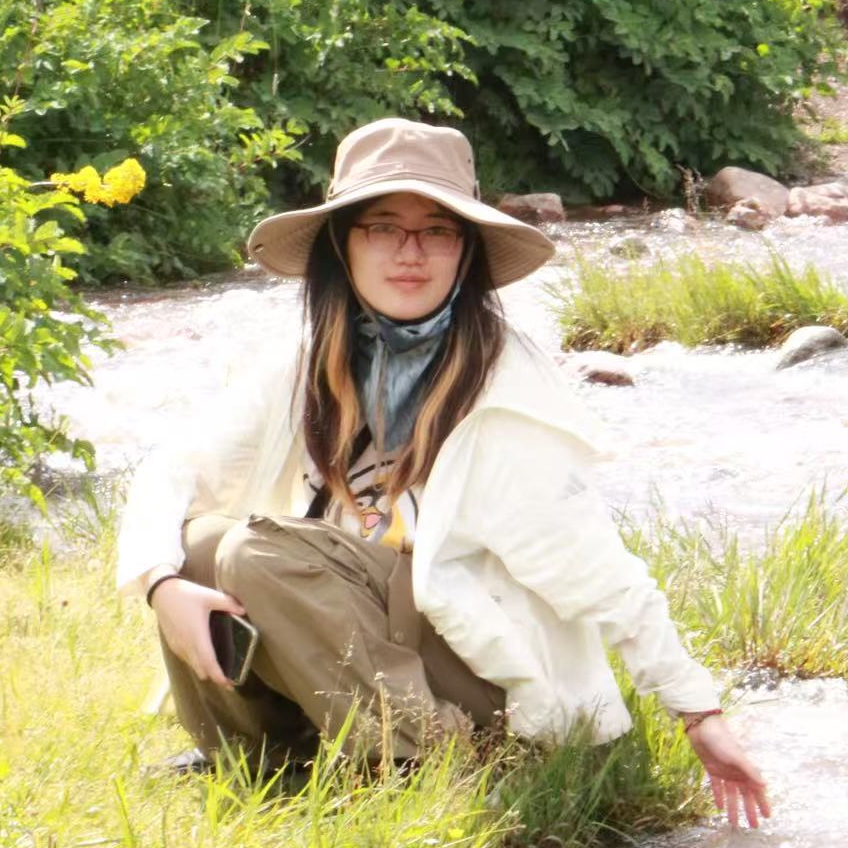

Group
PhD Students
 |
Donghao Li |
Renpu Liu |
Fengyu Gao |
Peng Wang |
|  | Cassia Cao |
|
|
Brooks Zhu |
Alumni
Ruiquan Huang |
Songtao Feng (PhD 2022, First job: Postdoc scholar at the Ohio State University)
Chao Gan (PhD 2020, Senior Data Scientist at Walmart Labs, Sunnyvale, California)
Boyu Wang (PhD 2019, First job: Data Scientist at Konux, Shenzhen)
Xianwen Wu (PhD 2016, First job: System Engineer at Qualcomm, San Diego)
Chih-Hsuan Sun (MS 2023)
Yue Zheng (MS 2023)
Yutong Mao (MS 2023)
Zixuan Tian (MS 2023)
Yucheng Hu (MS 2022)
Kangrui Han (MS 2022)
Tianwei Wu (MS 2022)
Bhanu Prakash Reddy Bujala (MS 2021)
Duo Cheng (MS 2021)
Zhongyi Wang (MS 2021)
Adam Leung (MS 2020)
Yifan Guo (MS 2020)
Zhen Dong (MS 2019)
Wesley Clawson (MS 2016)
Abderrahmane Mayouche (MS 2016)
Chenghao Deng (Undergraduate intern, Summer 2019, Tsinghua University)
Chao Wang (PhD student visitor, Summer 2019, University of Science and Technology of China)
Zhiyang Wang (MS student visitor, Fall 2018, University of Science and Technology of China)
Ruida Zhou (Undergraduate intern, Summer 2017, University of Science and Technology of China)